Chaque vie est unique, chaque histoire mérite d'être racontée
ECOUTER . RECUEILLIR . TRANSMETTRE

À vos côtés pour transcrire votre histoire
Je m'adresse aux particuliers, quel que soit leur âge, aux entreprises, aux groupes, aux familles.
Le départ est simple : avoir quelque chose à dire et avoir envie de l'écrire à l'aide d'un biographe ! Tous les thèmes sont envisageables, je tisserai avec vous la toile de votre récit.
Vous cherchez le plus beau des cadeaux : votre histoire ou celle d'un proche. Rien n'est plus précieux que les souvenirs qui tendent à s'envoler et à disparaitre, s'il ne sont pas relayés.
Depuis la nuit des temps, les histoires se transmettent ;
Pourquoi pas la vôtre ?
Pourquoi faire une biographie ?
- Pour raconter l'histoire de sa vie
- Pour raconter une histoire collective
- La biographie hospitalière
- Pour se raconter soi
- Pour se souvenir d'un événement
- Pour raconter un proche défunt
- La biographie du savoir-faire
Parcours, rencontres, origines, transmission entre les générations.
L'aventure d'une entreprise, l'histoire d'un quartier, une création de groupe, ...
Témoigner d'une expérience de santé, quand les mots ont besoin d'être entendus.
Déposer son histoire, être écouté, se relire, prendre du recul.
Voyage, rencontre, mariage, naissance, adoption, anniversaire, reconversion, ...
Préserver et transmettre un peu de son histoire, par écrit ou au creux de l'oreille.
Recettes, artisanat, techniques, pratiques et savoirs à transmettre.


Parler ensemble de votre projet, de vos envies, est un premier pas, n'hésitez pas à le franchir.
Vos retours
« Un grand merci à vous pour avoir posé des mots sur mes souvenirs, sur mon histoire, pour vos recherches, vos commentaires éclairés, votre écoute aussi. »
Commentaire de Christian
« Christine a une vraie curiosité de l'autre et je pense que c'est une des qualités première pour effectuer ce travail. Elle n'est pas intrusive, elle respecte les temps de silence et d'émotion. L'entretien a été très agréable. »
Commentaire de Evelyne